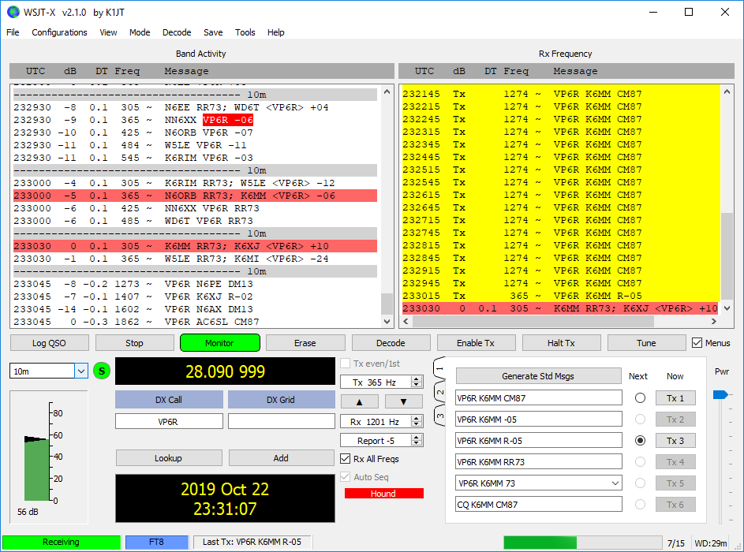
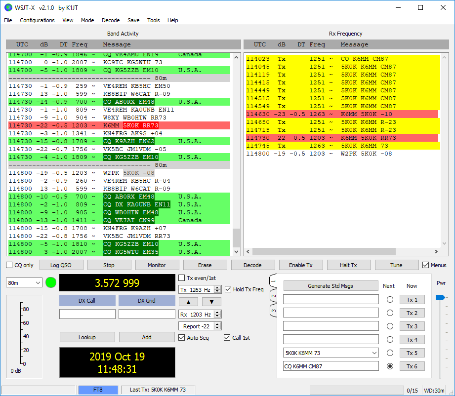

| Rich: I assume you opened up your passband to at least 300-400 Hz. Sometimes I forget, and when I do, there’s not much water on the waterfall. Snapshot of my 10M FT8 QSO yesterday with VP6R attached. I could clearly see their transmissions, as they were rapidly working stations all over the west coast. Their 10M rate yesterday peaked at 900 Qs per hour! But sometimes I don’t always see the other station’s transmission. See my 80M QSO with 5K0K attached. My approach: As long as the DX is still being spotted, I keep calling — until I find something better to do. 73, John, K6MM
  |